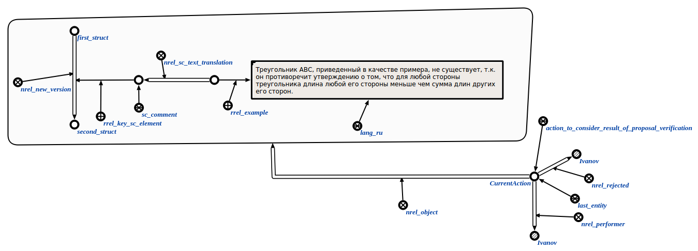

Команда отклонения результата верификации предложения предназначена для отклонения* результата верификации предложения*. Единственным аргументом команды является знак действия рассмотреть результат верификации предложения. Результатом выполнения команды является отклонение результата верификации предложения. Например:
